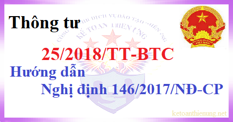

Thông tư 25/2018/TT-BTC ngày 16/3/2018 của Bộ tài chính Hướng dẫn Nghị định 146/2017/NĐ-CP sửa đổi, bổ sung một số điều của Thông tư 78/2014/TT-BTC và Thông tư 111/2013/TT-BTC
|
BỘ TÀI CHÍNH -------- |
CỘNG HÒA XÃ HỘI CHỦ NGHĨA VIỆT NAM Độc lập - Tự do - Hạnh phúc --------------- |
| Số: 25/2018/TT-BTC | Hà Nội, ngày 16 tháng 3 năm 2018 |
THÔNG TƯ
HƯỚNG DẪN NGHỊ ĐỊNH SỐ 146/2017/NĐ-CP NGÀY 15 THÁNG 12 NĂM 2017 CỦA CHÍNH PHỦ VÀ SỬA ĐỔI, BỔ SUNG MỘT SỐ ĐIỀU CỦA THÔNG TƯ SỐ 78/2014/TT-BTC NGÀY 18 THÁNG 6 NĂM 2014 CỦA BỘ TÀI CHÍNH, THÔNG TƯ SỐ 111/2013/TT-BTC NGÀY 15 THÁNG 8 NĂM 2013 CỦA BỘ TÀI CHÍNH
Căn cứ Luật chứng khoán số 70/2006/QH11 ngày 29 tháng 6 năm 2006 và Luật số 62/2010/QH12 sửa đổi, bổ sung một số điều của Luật chứng khoán ngày 24 tháng 11 năm 2010;HƯỚNG DẪN NGHỊ ĐỊNH SỐ 146/2017/NĐ-CP NGÀY 15 THÁNG 12 NĂM 2017 CỦA CHÍNH PHỦ VÀ SỬA ĐỔI, BỔ SUNG MỘT SỐ ĐIỀU CỦA THÔNG TƯ SỐ 78/2014/TT-BTC NGÀY 18 THÁNG 6 NĂM 2014 CỦA BỘ TÀI CHÍNH, THÔNG TƯ SỐ 111/2013/TT-BTC NGÀY 15 THÁNG 8 NĂM 2013 CỦA BỘ TÀI CHÍNH
Căn cứ Luật Thuế thu nhập cá nhân số 04/2007/QH12 ngày 21 tháng 11 năm 2007 và Luật sửa đổi, bổ sung một số điều của Luật Thuế thu nhập cá nhân số 26/2012/QH13 ngày 22 tháng 11 năm 2012;
Căn cứ Luật doanh nghiệp số 68/2014/QH13 ngày 26 tháng 11 năm 2014;
Căn cứ Luật sửa đổi, bổ sung một số điều của các Luật về thuế số 71/2014/QH13 ngày 26 tháng 11 năm 2014;
Căn cứ Luật số 106/2016/QH13 ngày 06 tháng 4 năm 2016 sửa đổi, bổ sung một số điều của Luật Thuế giá trị gia tăng, Luật Thuế tiêu thụ đặc biệt và Luật Quản lý thuế;
Căn cứ Nghị định số 65/2013/NĐ-CP ngày 27 tháng 6 năm 2013 của Chính phủ quy định chi tiết một số điều của Luật Thuế thu nhập cá nhân và Luật sửa đổi, bổ sung một số điều của Luật Thuế thu nhập cá nhân;
Căn cứ Nghị định số 12/2015/NĐ-CP ngày 12 tháng 02 năm 2015 của Chính phủ quy định chi tiết thi hành Luật sửa đổi, bổ sung một số điều của các Luật về thuế và sửa đổi, bổ sung một số điều của các Nghị định về thuế;
Căn cứ Nghị định số 100/2016/NĐ-CP ngày 01 tháng 7 năm 2016 của Chính phủ quy định chi tiết thi hành Luật sửa đổi, bổ sung một số điều của Luật Thuế giá trị gia tăng, Luật Thuế tiêu thụ đặc biệt và Luật Quản lý thuế;
Căn cứ Nghị định số 146/2017/NĐ-CP ngày 15 tháng 12 năm 2017 của Chính phủ sửa đổi, bổ sung một số điều của Nghị định số 100/2016/NĐ-CP ngày 01 tháng 7 năm 2016 và Nghị định số 12/2015/NĐ-CP ngày 12 tháng 02 năm 2015 của Chính phủ;
Căn cứ Nghị định số 87/2017/NĐ-CP ngày 26 tháng 7 năm 2017 của Chính phủ quy định chức năng, nhiệm vụ, quyền hạn và cơ cấu tổ chức của Bộ Tài chính;
Theo đề nghị của Tổng cục trưởng Tổng cục Thuế,
Bộ trưởng Bộ Tài chính ban hành Thông tư hướng dẫn Nghị định số 146/2017/NĐ-CP ngày 15 tháng 12 năm 2017 của Chính phủ và sửa đổi, bổ sung một số điều của Thông tư số 78/2014/TT-BTC ngày 18 tháng 6 năm 2014 của Bộ Tài chính, Thông tư số 111/2013/TT-BTC ngày 15 tháng 8 năm 2013 của Bộ Tài chính như sau:
Điều 1. Sửa đổi, bổ sung khoản 23 Điều 4 Thông tư số 219/2013/TT-BTC ngày 31/12/2013 của Bộ Tài chính (đã được sửa đổi, bổ sung theo Thông tư số 130/2016/TT-BTC ngày 12/8/2016 của Bộ Tài chính) như sau:
“23. Sản phẩm xuất khẩu là tài nguyên, khoáng sản khai thác chưa chế biến thành sản phẩm khác.
Sản phẩm xuất khẩu là hàng hóa được chế biến trực tiếp từ nguyên liệu chính là tài nguyên, khoáng sản có tổng trị giá tài nguyên, khoáng sản cộng với chi phí năng lượng chiếm từ 51% giá thành sản xuất sản phẩm trở lên, trừ một số trường hợp theo quy định tại khoản 1 Điều 1 Nghị định số 146/2017/NĐ-CP.
a) Tài nguyên, khoáng sản là tài nguyên, khoáng sản có nguồn gốc trong nước gồm: Khoáng sản kim loại; khoáng sản không kim loại; dầu thô; khí thiên nhiên; khí than.
b) Việc xác định tỷ trọng trị giá tài nguyên, khoáng sản và chi phí năng lượng trên giá thành được thực hiện theo công thức:
| Tỷ trọng trị giá tài nguyên, khoáng sản và chi phí năng lượng trên giá thành sản xuất sản phẩm | = |
Trị giá tài nguyên, khoáng sản + chi phí năng lượng |
x 100% |
|
Tổng giá thành sản xuất sản phẩm |
Trị giá tài nguyên, khoáng sản đưa vào chế biến được xác định như sau: Đối với tài nguyên, khoáng sản trực tiếp khai thác là chi phí trực tiếp, gián tiếp khai thác ra tài nguyên, khoáng sản không bao gồm chi phí vận chuyển tài nguyên, khoáng sản từ nơi khai thác đến nơi chế biến; đối với tài nguyên, khoáng sản mua để chế biến tiếp là giá thực tế mua không bao gồm chi phí vận chuyển tài nguyên, khoáng sản từ nơi mua đến nơi chế biến.
Chi phí năng lượng gồm: nhiên liệu, điện năng, nhiệt năng.
Trị giá tài nguyên, khoáng sản và chi phí năng lượng được xác định theo giá trị ghi sổ kế toán phù hợp với Bảng tổng hợp tính giá thành sản phẩm.
Giá thành sản xuất sản phẩm bao gồm: Chi phí nguyên vật liệu trực tiếp, chi phí nhân công trực tiếp và chi phí sản xuất chung. Các chi phí gián tiếp như chi phí bán hàng, chi phí quản lý, chi phí tài chính và chi phí khác không được tính vào giá thành sản xuất sản phẩm.
Tỷ lệ trị giá tài nguyên, khoáng sản và chi phí năng lượng trên giá thành sản xuất sản phẩm được xác định căn cứ vào quyết toán năm trước và tỷ lệ này được áp dụng ổn định trong năm xuất khẩu. Trường hợp năm đầu tiên xuất khẩu sản phẩm thì tỷ lệ trị giá tài nguyên, khoáng sản và chi phí năng lượng trên giá thành sản xuất sản phẩm được xác định theo phương án đầu tư và tỷ lệ này được áp dụng ổn định trong năm xuất khẩu; trường hợp không có phương án đầu tư thì tỷ lệ trị giá tài nguyên, khoáng sản và chi phí năng lượng trên giá thành sản xuất sản phẩm được xác định theo thực tế của sản phẩm xuất khẩu.
c) Trường hợp doanh nghiệp không xuất khẩu mà bán cho doanh nghiệp khác để xuất khẩu thì doanh nghiệp mua hàng hóa này để xuất khẩu phải thực hiện kê khai thuế GTGT như sản phẩm cùng loại do doanh nghiệp sản xuất trực tiếp xuất khẩu.
d) Cục Thuế các tỉnh, thành phố phối hợp với các cơ quan quản lý nhà nước chuyên ngành trên địa bàn theo chức năng, nhiệm vụ của từng cơ quan để hướng dẫn các doanh nghiệp có hoạt động sản xuất, kinh doanh xuất khẩu sản phẩm từ tài nguyên, khoáng sản căn cứ đặc tính sản phẩm và quy trình sản xuất sản phẩm để xác định sản phẩm xuất khẩu là tài nguyên, khoáng sản đã chế biến hoặc chưa chế biến thành sản phẩm khác để thực hiện kê khai theo quy định.
Đối với trường hợp doanh nghiệp kê khai sản phẩm đã chế biến thành sản phẩm khác mà quy trình sản xuất sản phẩm chưa đủ cơ sở xác định là sản phẩm khác thì Cục Thuế có trách nhiệm báo cáo Tổng cục Thuế để phối hợp với các Bộ, Cơ quan quản lý nhà nước chuyên ngành căn cứ vào quy trình sản xuất sản phẩm xuất khẩu của doanh nghiệp để xác định sản phẩm xuất khẩu là tài nguyên, khoáng sản chưa chế biến thành sản phẩm khác hay đã chế biến thành sản phẩm khác theo quy định của pháp luật.
Điều 2. Sửa đổi, bổ sung khoản 4 Điều 18 Thông tư số 219/2013/TT-BTC ngày 31/12/2013 của Bộ Tài chính (đã được sửa đổi, bổ sung theo Thông tư số 130/2016/TT-BTC ngày 12/8/2016 của Bộ Tài chính) như sau:
“4. Hoàn thuế đối với hàng hóa, dịch vụ xuất khẩu
a) Cơ sở kinh doanh trong tháng (đối với trường hợp kê khai theo tháng), quý (đối với trường hợp kê khai theo quý) có hàng hóa, dịch vụ xuất khẩu bao gồm cả trường hợp: Hàng hóa nhập khẩu sau đó xuất khẩu vào khu phi thuế quan; hàng hóa nhập khẩu sau đó xuất khẩu ra nước ngoài, có số thuế giá trị gia tăng đầu vào chưa được khấu trừ từ 300 triệu đồng trở lên thì được hoàn thuế giá trị gia tăng theo tháng, quý; trường hợp trong tháng, quý số thuế giá trị gia tăng đầu vào chưa được khấu trừ chưa đủ 300 triệu đồng thì được khấu trừ vào tháng, quý tiếp theo.
Cơ sở kinh doanh trong tháng/quý vừa có hàng hoá, dịch vụ xuất khẩu, vừa có hàng hoá, dịch vụ tiêu thụ nội địa thì cơ sở kinh doanh phải hạch toán riêng số thuế GTGT đầu vào sử dụng cho sản xuất kinh doanh hàng hóa, dịch vụ xuất khẩu. Trường hợp không hạch toán riêng được thì số thuế giá trị gia tăng đầu vào của hàng hóa, dịch vụ xuất khẩu được xác định theo tỷ lệ giữa doanh thu của hàng hóa, dịch vụ xuất khẩu trên tổng doanh thu hàng hóa, dịch vụ của các kỳ khai thuế giá trị gia tăng tính từ kỳ khai thuế tiếp theo kỳ hoàn thuế liền trước đến kỳ đề nghị hoàn thuế hiện tại.
Số thuế GTGT đầu vào của hàng hóa, dịch vụ xuất khẩu (bao gồm số thuế GTGT đầu vào hạch toán riêng được và số thuế GTGT đầu vào được phân bổ theo tỷ lệ nêu trên) nếu sau khi bù trừ với số thuế GTGT phải nộp của hàng hóa, dịch vụ tiêu thụ nội địa còn lại từ 300 triệu đồng trở lên thì cơ sở kinh doanh được hoàn thuế cho hàng hóa, dịch vụ xuất khẩu. Số thuế GTGT được hoàn của hàng hóa, dịch vụ xuất khẩu không vượt quá doanh thu của hàng hóa, dịch vụ xuất khẩu nhân (x) với 10%.
Đối tượng được hoàn thuế trong một số trường hợp xuất khẩu như sau: Đối với trường hợp ủy thác xuất khẩu, là cơ sở có hàng hóa ủy thác xuất khẩu; đối với gia công chuyển tiếp, là cơ sở ký hợp đồng gia công xuất khẩu với phía nước ngoài; đối với hàng hóa xuất khẩu để thực hiện công trình xây dựng ở nước ngoài, là doanh nghiệp có hàng hóa, vật tư xuất khẩu thực hiện công trình xây dựng ở nước ngoài; đối với hàng hóa xuất khẩu tại chỗ là cơ sở kinh doanh có hàng hóa xuất khẩu tại chỗ.
b) Cơ sở kinh doanh không được hoàn thuế giá trị gia tăng đối với trường hợp: Hàng hóa nhập khẩu sau đó xuất khẩu mà hàng hóa xuất khẩu đó không thực hiện việc xuất khẩu tại địa bàn hoạt động hải quan theo quy định của pháp luật về hải quan; hàng hóa xuất khẩu không thực hiện việc xuất khẩu tại địa bàn hoạt động hải quan theo quy định của pháp luật về hải quan.
c) Cơ quan thuế thực hiện hoàn thuế trước, kiểm tra sau đối với người nộp thuế sản xuất hàng hóa xuất khẩu không bị xử lý đối với hành vi buôn lậu, vận chuyển trái phép hàng hóa qua biên giới, trốn thuế, gian lận thuế, gian lận thương mại trong thời gian hai năm liên tục; người nộp thuế không thuộc đối tượng rủi ro cao theo quy định của Luật quản lý thuế và các văn bản hướng dẫn thi hành.”
Điều 3. Sửa đổi, bổ sung tiết e điểm 2.2, tiết b điểm 2.6, điểm 2.11 và điểm 2.30 khoản 2 Điều 6 Thông tư số 78/2014/TT-BTC ngày 18/6/2014 của Bộ Tài chính (đã được sửa đổi, bổ sung tại Điều 4 Thông tư số 96/2015/TT-BTC ngày 22/6/2015 của Bộ Tài chính) như sau:
1. Bổ sung tiết e điểm 2.2 khoản 2 Điều 6 Thông tư số 78/2014/TT-BTC (đã được sửa đổi, bổ sung tại Điều 4 Thông tư số 96/2015/TT-BTC ngày 22/6/2015 của Bộ Tài chính):
“Trường hợp doanh nghiệp có chuyển nhượng một phần vốn hoặc chuyển nhượng toàn bộ doanh nghiệp khác theo quy định của pháp luật, nếu có chuyển giao tài sản thì doanh nghiệp nhận chuyển nhượng chỉ được trích khấu hao tài sản cố định vào chi phí được trừ đối với các tài sản chuyển giao đủ điều kiện trích khấu hao theo giá trị còn lại trên sổ sách kế toán tại doanh nghiệp chuyển nhượng.”.
2. Sửa đổi đoạn thứ nhất tại tiết b điểm 2.6 khoản 2 Điều 6 Thông tư số 78/2014/TT-BTC (đã được sửa đổi, bổ sung tại Điều 4 Thông tư số 96/2015/TT-BTC ngày 22/6/2015 của Bộ Tài chính):
“b) Các khoản tiền lương, tiền thưởng cho người lao động không được ghi cụ thể điều kiện được hưởng và mức được hưởng tại một trong các hồ sơ sau: Hợp đồng lao động; Thoả ước lao động tập thể; Quy chế tài chính của Công ty, Tổng công ty, Tập đoàn; Quy chế thưởng do Chủ tịch Hội đồng quản trị, Tổng giám đốc, Giám đốc quy định theo quy chế tài chính của Công ty, Tổng công ty.”.
3. Sửa đổi, bổ sung điểm 2.11 khoản 2 Điều 6 Thông tư số 78/2014/TT-BTC (đã được sửa đổi, bổ sung tại Điều 4 Thông tư số 96/2015/TT-BTC ngày 22/6/2015 của Bộ Tài chính):
“2.11. Phần chi vượt mức 03 triệu đồng/tháng/người để: Trích nộp quỹ hưu trí tự nguyện, mua bảo hiểm hưu trí tự nguyện, bảo hiểm nhân thọ cho người lao động; phần vượt mức quy định của pháp luật về bảo hiểm xã hội, về bảo hiểm y tế để trích nộp các quỹ có tính chất an sinh xã hội (bảo hiểm xã hội, bảo hiểm hưu trí bổ sung bắt buộc), quỹ bảo hiểm y tế và quỹ bảo hiểm thất nghiệp cho người lao động.
Khoản chi trích nộp quỹ hưu trí tự nguyện, quỹ có tính chất an sinh xã hội, mua bảo hiểm hưu trí tự nguyện, bảo hiểm nhân thọ cho người lao động được tính vào chi phí được trừ ngoài việc không vượt mức quy định tại điểm này còn phải được ghi cụ thể điều kiện hưởng và mức hưởng tại một trong các hồ sơ sau: Hợp đồng lao động; Thỏa ước lao động tập thể; Quy chế tài chính của Công ty, Tổng công ty, Tập đoàn; Quy chế thưởng do Chủ tịch Hội đồng quản trị Tổng giám đốc, Giám đốc quy định theo quy chế tài chính của Công ty, Tổng công ty.
Doanh nghiệp không được tính vào chi phí đối với các khoản chi cho chương trình tự nguyện nêu trên nếu doanh nghiệp không thực hiện đầy đủ các nghĩa vụ về bảo hiểm bắt buộc cho người lao động (kể cả trường hợp nợ tiền bảo hiểm bắt buộc).”.
4. Sửa đổi đoạn thứ nhất của gạch đầu dòng thứ năm tại điểm 2.30, khoản 2, Điều 6 của Thông tư số 78/2014/TT-BTC (đã được sửa đổi, bổ sung tại Điều 4 Thông tư số 96/2015/TT-BTC):
“- Khoản chi có tính chất phúc lợi chi trực tiếp cho người lao động như: chi đám hiếu, hỷ của bản thân và gia đình người lao động; chi nghỉ mát, chi hỗ trợ điều trị; chi hỗ trợ bổ sung kiến thức học tập tại cơ sở đào tạo; chi hỗ trợ gia đình người lao động bị ảnh hưởng bởi thiên tai, địch họa, tai nạn, ốm đau; chi khen thưởng con của người lao động có thành tích tốt trong học tập; chi hỗ trợ chi phí đi lại ngày lễ, tết cho người lao động; chi bảo hiểm tai nạn, bảo hiểm sức khỏe, bảo hiểm tự nguyện khác cho người lao động (trừ khoản chi mua bảo hiểm nhân thọ cho người lao động, bảo hiểm hưu trí tự nguyện cho người lao động hướng dẫn tại điểm 2.11 Điều này) và những khoản chi có tính chất phúc lợi khác. Tổng số chi có tính chất phúc lợi nêu trên không quá 01 tháng lương bình quân thực tế thực hiện trong năm tính thuế của doanh nghiệp.”
Điều 4. Sửa đổi, bổ sung điểm b khoản 4 Điều 2 Thông tư số 111/2013/TT-BTC ngày 15/8/2013 của Bộ Tài chính như sau:
“b. Thu nhập từ chuyển nhượng chứng khoán, bao gồm: thu nhập từ chuyển nhượng cổ phiếu, quyền mua cổ phiếu, trái phiếu, tín phiếu, chứng chỉ quỹ và các loại chứng khoán khác theo quy định tại khoản 1 Điều 6 của Luật chứng khoán. Thu nhập từ chuyển nhượng cổ phiếu của các cá nhân trong công ty cổ phần theo quy định tại khoản 2 Điều 6 của Luật chứng khoán và Điều 120 của Luật doanh nghiệp.”
Điều 5. Hiệu lực thi hành
1. Thông tư này có hiệu lực thi hành kể từ ngày 01 tháng 5 năm 2018.
2. Các trường hợp phát sinh từ ngày 01/02/2018, chịu sự điều chỉnh của Nghị định 146/2017/NĐ-CP được thực hiện theo quy định tại Nghị định 146/2017/NĐ-CP và hướng dẫn tại Điều 1, Điều 2, khoản 2, 3, 4 Điều 3 Thông tư này.
3. Trong quá trình thực hiện nếu có vướng mắc, đề nghị các tổ chức, cá nhân phản ánh kịp thời về Bộ Tài chính để nghiên cứu giải quyết./.
|
Nơi nhận: - Văn phòng Trung ương và các Ban của Đảng; - Văn phòng Quốc hội; - Văn phòng Chủ tịch nước; - Văn phòng Tổng Bí thư; - Viện Kiểm sát nhân dân tối cao; - Toà án nhân dân tối cao; - Kiểm toán nhà nước; - Các Bộ, cơ quan ngang Bộ, cơ quan thuộc Chính phủ, - Cơ quan Trung ương của các đoàn thể; - Hội đồng nhân dân, Uỷ ban nhân dân, Sở Tài chính, Cục Thuế, Kho bạc nhà nước các tỉnh, thành phố trực thuộc Trung ương; - Công báo; - Cục Kiểm tra văn bản (Bộ Tư pháp); - Website Chính phủ; - Website Bộ Tài chính; Website Tổng cục Thuế; - Các đơn vị thuộc Bộ Tài chính; - Lưu: VT, TCT (VT, CS). |
KT. BỘ TRƯỞNG THỨ TRƯỞNG Đỗ Hoàng Anh Tuấn |
--------------------------------------------------------
